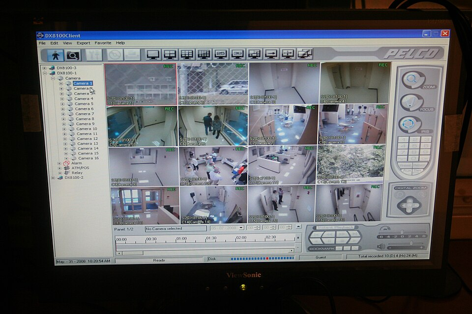

Definir el problema
Las inspecciones de seguridad son puntuales y las cámaras graban sin avisar: una conducta insegura dura segundos y se detecta tarde o nunca.

Ejemplo: un operario cruza fuera de la vía peatonal mientras pasa un montacargas. Nadie lo ve hasta revisar el video días después.